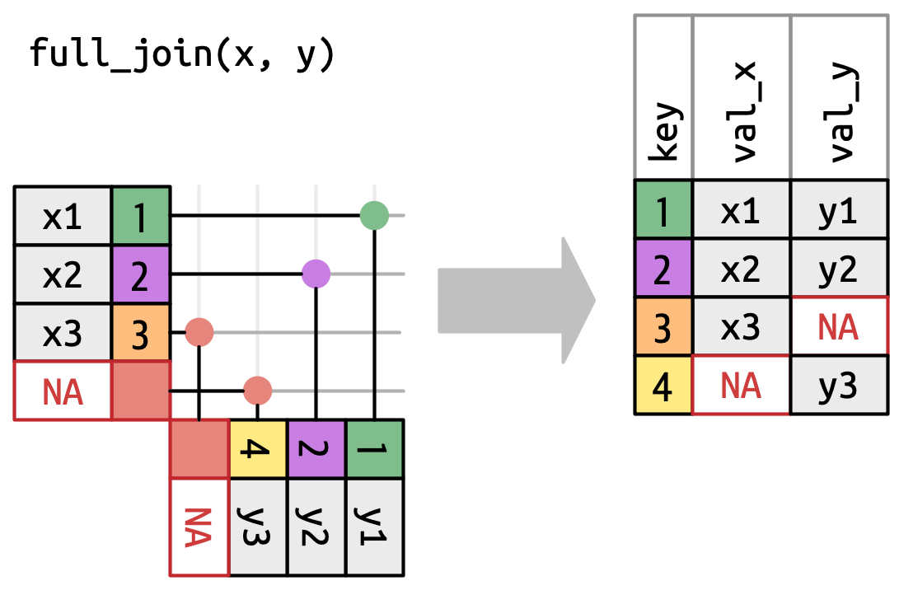

19 Joins
19.1 Introduction
It’s rare that a data analysis involves only a single data frame.
数据分析很少只涉及单个数据框。
Typically you have many data frames, and you must join them together to answer the questions that you’re interested in.
通常你会有很多数据框，你必须将它们 连接 (join) 在一起才能回答你感兴趣的问题。
This chapter will introduce you to two important types of joins:
本章将向你介绍两种重要的连接类型：
- Mutating joins, which add new variables to one data frame from matching observations in another.
修改连接 (Mutating joins)，它将一个数据框中的匹配观测值的新变量添加到另一个数据框中。 - Filtering joins, which filter observations from one data frame based on whether or not they match an observation in another.
过滤连接 (Filtering joins)，它根据一个数据框中的观测值是否与另一个数据框中的观测值匹配来过滤它们。
We’ll begin by discussing keys, the variables used to connect a pair of data frames in a join.
我们将从讨论键 (keys) 开始，键是用于在连接中连接一对数据框的变量。
We cement the theory with an examination of the keys in the datasets from the nycflights13 package, then use that knowledge to start joining data frames together.
我们将通过检查 nycflights13 包中数据集的键来巩固理论，然后利用这些知识开始将数据框连接在一起。
Next we’ll discuss how joins work, focusing on their action on the rows.
接下来我们将讨论连接的工作原理，重点关注它们对行的操作。
We’ll finish up with a discussion of non-equi joins, a family of joins that provide a more flexible way of matching keys than the default equality relationship.
最后，我们将讨论非等值连接 (non-equi joins)，这类连接提供了一种比默认的相等关系更灵活的键匹配方式。
19.1.1 Prerequisites
In this chapter, we’ll explore the five related datasets from nycflights13 using the join functions from dplyr.
在本章中，我们将使用 dplyr 中的连接函数来探索 nycflights13 中的五个相关数据集。
19.2 Keys
To understand joins, you need to first understand how two tables can be connected through a pair of keys, within each table.
要理解连接，你首先需要理解两个表如何通过每个表内的一对键进行连接。
In this section, you’ll learn about the two types of key and see examples of both in the datasets of the nycflights13 package.
在本节中，你将学习两种类型的键，并在 nycflights13 包的数据集中看到这两种键的示例。
You’ll also learn how to check that your keys are valid, and what to do if your table lacks a key.
你还将学习如何检查你的键是否有效，以及当你的表缺少键时该怎么做。
19.2.1 Primary and foreign keys
Every join involves a pair of keys: a primary key and a foreign key.
每个连接都涉及一对键：主键 (primary key) 和外键 (foreign key)。
A primary key is a variable or set of variables that uniquely identifies each observation.
主键 (primary key) 是一个或一组唯一标识每个观测值的变量。
When more than one variable is needed, the key is called a compound key. For example, in nycflights13:
当需要多个变量时，该键称为 复合键 (compound key)。例如，在 nycflights13 中：
-
airlinesrecords two pieces of data about each airline: its carrier code and its full name. You can identify an airline with its two letter carrier code, makingcarrierthe primary key.airlines记录了每家航空公司的两部分数据：其承运人代码 (carrier code) 和其全名。你可以用其两位字母的承运人代码来识别一家航空公司，因此carrier是主键。airlines #> # A tibble: 16 × 2 #> carrier name #> <chr> <chr> #> 1 9E Endeavor Air Inc. #> 2 AA American Airlines Inc. #> 3 AS Alaska Airlines Inc. #> 4 B6 JetBlue Airways #> 5 DL Delta Air Lines Inc. #> 6 EV ExpressJet Airlines Inc. #> # ℹ 10 more rows -
airportsrecords data about each airport. You can identify each airport by its three letter airport code, makingfaathe primary key.airports记录了每个机场的数据。你可以用其三位字母的机场代码来识别每个机场，因此faa是主键。airports #> # A tibble: 1,458 × 8 #> faa name lat lon alt tz dst #> <chr> <chr> <dbl> <dbl> <dbl> <dbl> <chr> #> 1 04G Lansdowne Airport 41.1 -80.6 1044 -5 A #> 2 06A Moton Field Municipal Airport 32.5 -85.7 264 -6 A #> 3 06C Schaumburg Regional 42.0 -88.1 801 -6 A #> 4 06N Randall Airport 41.4 -74.4 523 -5 A #> 5 09J Jekyll Island Airport 31.1 -81.4 11 -5 A #> 6 0A9 Elizabethton Municipal Airpo… 36.4 -82.2 1593 -5 A #> # ℹ 1,452 more rows #> # ℹ 1 more variable: tzone <chr> -
planesrecords data about each plane. You can identify a plane by its tail number, makingtailnumthe primary key.planes记录了每架飞机的数据。你可以用其尾号 (tail number) 来识别一架飞机，因此tailnum是主键。planes #> # A tibble: 3,322 × 9 #> tailnum year type manufacturer model engines #> <chr> <int> <chr> <chr> <chr> <int> #> 1 N10156 2004 Fixed wing multi… EMBRAER EMB-145XR 2 #> 2 N102UW 1998 Fixed wing multi… AIRBUS INDUSTR… A320-214 2 #> 3 N103US 1999 Fixed wing multi… AIRBUS INDUSTR… A320-214 2 #> 4 N104UW 1999 Fixed wing multi… AIRBUS INDUSTR… A320-214 2 #> 5 N10575 2002 Fixed wing multi… EMBRAER EMB-145LR 2 #> 6 N105UW 1999 Fixed wing multi… AIRBUS INDUSTR… A320-214 2 #> # ℹ 3,316 more rows #> # ℹ 3 more variables: seats <int>, speed <int>, engine <chr> -
weatherrecords data about the weather at the origin airports. You can identify each observation by the combination of location and time, makingoriginandtime_hourthe compound primary key.weather记录了始发机场的天气数据。你可以通过位置和时间的组合来识别每个观测值，因此origin和time_hour是复合主键。weather #> # A tibble: 26,115 × 15 #> origin year month day hour temp dewp humid wind_dir #> <chr> <int> <int> <int> <int> <dbl> <dbl> <dbl> <dbl> #> 1 EWR 2013 1 1 1 39.0 26.1 59.4 270 #> 2 EWR 2013 1 1 2 39.0 27.0 61.6 250 #> 3 EWR 2013 1 1 3 39.0 28.0 64.4 240 #> 4 EWR 2013 1 1 4 39.9 28.0 62.2 250 #> 5 EWR 2013 1 1 5 39.0 28.0 64.4 260 #> 6 EWR 2013 1 1 6 37.9 28.0 67.2 240 #> # ℹ 26,109 more rows #> # ℹ 6 more variables: wind_speed <dbl>, wind_gust <dbl>, …
A foreign key is a variable (or set of variables) that corresponds to a primary key in another table.
外键 (foreign key) 是一个（或一组）与另一个表中的主键相对应的变量。
For example:
例如：
flights$tailnumis a foreign key that corresponds to the primary keyplanes$tailnum.flights$tailnum是一个外键，它对应于主键planes$tailnum。flights$carrieris a foreign key that corresponds to the primary keyairlines$carrier.flights$carrier是一个外键，它对应于主键airlines$carrier。flights$originis a foreign key that corresponds to the primary keyairports$faa.flights$origin是一个外键，它对应于主键airports$faa。flights$destis a foreign key that corresponds to the primary keyairports$faa.flights$dest是一个外键，它对应于主键airports$faa。flights$origin-flights$time_houris a compound foreign key that corresponds to the compound primary keyweather$origin-weather$time_hour.flights$origin-flights$time_hour是一个复合外键，它对应于复合主键weather$origin-weather$time_hour。
These relationships are summarized visually in Figure 19.1.
这些关系在 Figure 19.1 中进行了可视化总结。

You’ll notice a nice feature in the design of these keys: the primary and foreign keys almost always have the same names, which, as you’ll see shortly, will make your joining life much easier.
你会注意到这些键的设计中有一个很好的特性：主键和外键几乎总是有相同的名称，正如你很快就会看到的，这将使你的连接工作变得容易得多。
It’s also worth noting the opposite relationship: almost every variable name used in multiple tables has the same meaning in each place.
同样值得注意的是相反的关系：几乎每个在多个表中使用的变量名在每个地方都有相同的含义。
There’s only one exception: year means year of departure in flights and year manufactured in planes.
只有一个例外：year 在 flights 中表示起飞年份，在 planes 中表示制造年份。
This will become important when we start actually joining tables together.
当我们开始实际连接表时，这一点将变得很重要。
19.2.2 Checking primary keys
Now that that we’ve identified the primary keys in each table, it’s good practice to verify that they do indeed uniquely identify each observation.
既然我们已经确定了每个表中的主键，那么验证它们确实唯一地标识了每个观测值是一个好习惯。
One way to do that is to count() the primary keys and look for entries where n is greater than one.
一种方法是使用 count() 计算主键，并查找 n 大于 1 的条目。
This reveals that planes and weather both look good:
这表明 planes 和 weather 都看起来不错：
You should also check for missing values in your primary keys — if a value is missing then it can’t identify an observation!
你还应该检查主键中的缺失值——如果一个值是缺失的，那么它就无法识别一个观测值！
planes |>
filter(is.na(tailnum))
#> # A tibble: 0 × 9
#> # ℹ 9 variables: tailnum <chr>, year <int>, type <chr>, manufacturer <chr>,
#> # model <chr>, engines <int>, seats <int>, speed <int>, engine <chr>
weather |>
filter(is.na(time_hour) | is.na(origin))
#> # A tibble: 0 × 15
#> # ℹ 15 variables: origin <chr>, year <int>, month <int>, day <int>,
#> # hour <int>, temp <dbl>, dewp <dbl>, humid <dbl>, wind_dir <dbl>, …19.2.3 Surrogate keys
So far we haven’t talked about the primary key for flights.
到目前为止，我们还没有讨论 flights 的主键。
It’s not super important here, because there are no data frames that use it as a foreign key, but it’s still useful to consider because it’s easier to work with observations if we have some way to describe them to others.
在这里它不是特别重要，因为没有数据框使用它作为外键，但它仍然值得考虑，因为如果我们有某种方式向他人描述观测值，处理它们会更容易。
After a little thinking and experimentation, we determined that there are three variables that together uniquely identify each flight:
经过一番思考和实验，我们确定有三个变量可以共同唯一地识别每个航班：
Does the absence of duplicates automatically make time_hour-carrier-flight a primary key?
没有重复值是否会自动使 time_hour-carrier-flight 成为主键？
It’s certainly a good start, but it doesn’t guarantee it.
这当然是一个好的开始，但并不能保证。
For example, are altitude and latitude a good primary key for airports?
例如，高度和纬度是 airports 的好主键吗？
Identifying an airport by its altitude and latitude is clearly a bad idea, and in general it’s not possible to know from the data alone whether or not a combination of variables makes a good a primary key.
通过高度和纬度来识别一个机场显然是一个坏主意，而且通常来说，仅从数据本身无法判断一个变量组合是否能构成一个好的主键。
But for flights, the combination of time_hour, carrier, and flight seems reasonable because it would be really confusing for an airline and its customers if there were multiple flights with the same flight number in the air at the same time.
但对于航班来说，time_hour、carrier 和 flight 的组合似乎是合理的，因为如果同一时间有多架相同航班号的飞机在空中，对航空公司及其乘客来说会非常混乱。
That said, we might be better off introducing a simple numeric surrogate key using the row number:
话虽如此，我们最好还是使用行号引入一个简单的数字代理键 (surrogate key)：
flights2 <- flights |>
mutate(id = row_number(), .before = 1)
flights2
#> # A tibble: 336,776 × 20
#> id year month day dep_time sched_dep_time dep_delay arr_time
#> <int> <int> <int> <int> <int> <int> <dbl> <int>
#> 1 1 2013 1 1 517 515 2 830
#> 2 2 2013 1 1 533 529 4 850
#> 3 3 2013 1 1 542 540 2 923
#> 4 4 2013 1 1 544 545 -1 1004
#> 5 5 2013 1 1 554 600 -6 812
#> 6 6 2013 1 1 554 558 -4 740
#> # ℹ 336,770 more rows
#> # ℹ 12 more variables: sched_arr_time <int>, arr_delay <dbl>, …Surrogate keys can be particularly useful when communicating to other humans: it’s much easier to tell someone to take a look at flight 2001 than to say look at UA430 which departed 9am 2013-01-03.
代理键在与人交流时特别有用：告诉别人查看 2001 号航班比说查看 2013 年 1 月 3 日上午 9 点起飞的 UA430 航班要容易得多。
19.2.4 Exercises
We forgot to draw the relationship between
weatherandairportsin Figure 19.1. What is the relationship and how should it appear in the diagram?weatheronly contains information for the three origin airports in NYC. If it contained weather records for all airports in the USA, what additional connection would it make toflights?The
year,month,day,hour, andoriginvariables almost form a compound key forweather, but there’s one hour that has duplicate observations. Can you figure out what’s special about that hour?We know that some days of the year are special and fewer people than usual fly on them (e.g., Christmas eve and Christmas day). How might you represent that data as a data frame? What would be the primary key? How would it connect to the existing data frames?
Draw a diagram illustrating the connections between the
Batting,People, andSalariesdata frames in the Lahman package. Draw another diagram that shows the relationship betweenPeople,Managers,AwardsManagers. How would you characterize the relationship between theBatting,Pitching, andFieldingdata frames?
19.3 Basic joins
Now that you understand how data frames are connected via keys, we can start using joins to better understand the flights dataset.
既然你已经了解了数据框是如何通过键连接的，我们就可以开始使用连接来更好地理解 flights 数据集了。
dplyr provides six join functions: left_join(), inner_join(), right_join(), full_join(), semi_join(), and anti_join(). They all have the same interface: they take a pair of data frames (x and y) and return a data frame.
dplyr 提供了六个连接函数：left_join()、inner_join()、right_join()、full_join()、semi_join() 和 anti_join()。它们都具有相同的接口：接收一对数据框 (x 和 y) 并返回一个数据框。
The order of the rows and columns in the output is primarily determined by x.
输出中行和列的顺序主要由 x 决定。
In this section, you’ll learn how to use one mutating join, left_join(), and two filtering joins, semi_join() and anti_join().
在本节中，你将学习如何使用一个修改连接 (left_join()) 和两个过滤连接 (semi_join() 和 anti_join())。
In the next section, you’ll learn exactly how these functions work, and about the remaining inner_join(), right_join() and full_join().
在下一节中，你将确切地学习这些函数的工作原理，以及剩下的 inner_join()、right_join() 和 full_join()。
19.3.1 Mutating joins
A mutating join allows you to combine variables from two data frames: it first matches observations by their keys, then copies across variables from one data frame to the other.
修改连接 (mutating join) 允许你合并来自两个数据框的变量：它首先通过它们的键匹配观测值，然后将变量从一个数据框复制到另一个。
Like mutate(), the join functions add variables to the right, so if your dataset has many variables, you won’t see the new ones.
与 mutate() 类似，连接函数会将变量添加到右侧，所以如果你的数据集有很多变量，你将看不到新添加的变量。
For these examples, we’ll make it easier to see what’s going on by creating a narrower dataset with just six variables1:
对于这些例子，我们将创建一个只包含六个变量的更窄的数据集，以便更容易地看清楚发生了什么1：
flights2 <- flights |>
select(year, time_hour, origin, dest, tailnum, carrier)
flights2
#> # A tibble: 336,776 × 6
#> year time_hour origin dest tailnum carrier
#> <int> <dttm> <chr> <chr> <chr> <chr>
#> 1 2013 2013-01-01 05:00:00 EWR IAH N14228 UA
#> 2 2013 2013-01-01 05:00:00 LGA IAH N24211 UA
#> 3 2013 2013-01-01 05:00:00 JFK MIA N619AA AA
#> 4 2013 2013-01-01 05:00:00 JFK BQN N804JB B6
#> 5 2013 2013-01-01 06:00:00 LGA ATL N668DN DL
#> 6 2013 2013-01-01 05:00:00 EWR ORD N39463 UA
#> # ℹ 336,770 more rowsThere are four types of mutating join, but there’s one that you’ll use almost all of the time: left_join().
有四种类型的修改连接，但有一种你几乎会一直使用：left_join()。
It’s special because the output will always have the same rows as x, the data frame you’re joining to2.
它之所以特殊，是因为输出将始终与你所连接的数据框 x 具有相同的行2。
The primary use of left_join() is to add in additional metadata.left_join() 的主要用途是添加额外的元数据 (metadata)。
For example, we can use left_join() to add the full airline name to the flights2 data:
例如，我们可以使用 left_join() 将完整的航空公司名称添加到 flights2 数据中：
flights2 |>
left_join(airlines)
#> Joining with `by = join_by(carrier)`
#> # A tibble: 336,776 × 7
#> year time_hour origin dest tailnum carrier name
#> <int> <dttm> <chr> <chr> <chr> <chr> <chr>
#> 1 2013 2013-01-01 05:00:00 EWR IAH N14228 UA United Air Lines In…
#> 2 2013 2013-01-01 05:00:00 LGA IAH N24211 UA United Air Lines In…
#> 3 2013 2013-01-01 05:00:00 JFK MIA N619AA AA American Airlines I…
#> 4 2013 2013-01-01 05:00:00 JFK BQN N804JB B6 JetBlue Airways
#> 5 2013 2013-01-01 06:00:00 LGA ATL N668DN DL Delta Air Lines Inc.
#> 6 2013 2013-01-01 05:00:00 EWR ORD N39463 UA United Air Lines In…
#> # ℹ 336,770 more rowsOr we could find out the temperature and wind speed when each plane departed:
或者我们可以找出每架飞机起飞时的温度和风速：
flights2 |>
left_join(weather |> select(origin, time_hour, temp, wind_speed))
#> Joining with `by = join_by(time_hour, origin)`
#> # A tibble: 336,776 × 8
#> year time_hour origin dest tailnum carrier temp wind_speed
#> <int> <dttm> <chr> <chr> <chr> <chr> <dbl> <dbl>
#> 1 2013 2013-01-01 05:00:00 EWR IAH N14228 UA 39.0 12.7
#> 2 2013 2013-01-01 05:00:00 LGA IAH N24211 UA 39.9 15.0
#> 3 2013 2013-01-01 05:00:00 JFK MIA N619AA AA 39.0 15.0
#> 4 2013 2013-01-01 05:00:00 JFK BQN N804JB B6 39.0 15.0
#> 5 2013 2013-01-01 06:00:00 LGA ATL N668DN DL 39.9 16.1
#> 6 2013 2013-01-01 05:00:00 EWR ORD N39463 UA 39.0 12.7
#> # ℹ 336,770 more rowsOr what size of plane was flying:
或者当时飞的是什么尺寸的飞机：
flights2 |>
left_join(planes |> select(tailnum, type, engines, seats))
#> Joining with `by = join_by(tailnum)`
#> # A tibble: 336,776 × 9
#> year time_hour origin dest tailnum carrier type
#> <int> <dttm> <chr> <chr> <chr> <chr> <chr>
#> 1 2013 2013-01-01 05:00:00 EWR IAH N14228 UA Fixed wing multi en…
#> 2 2013 2013-01-01 05:00:00 LGA IAH N24211 UA Fixed wing multi en…
#> 3 2013 2013-01-01 05:00:00 JFK MIA N619AA AA Fixed wing multi en…
#> 4 2013 2013-01-01 05:00:00 JFK BQN N804JB B6 Fixed wing multi en…
#> 5 2013 2013-01-01 06:00:00 LGA ATL N668DN DL Fixed wing multi en…
#> 6 2013 2013-01-01 05:00:00 EWR ORD N39463 UA Fixed wing multi en…
#> # ℹ 336,770 more rows
#> # ℹ 2 more variables: engines <int>, seats <int>When left_join() fails to find a match for a row in x, it fills in the new variables with missing values.
当 left_join() 无法为 x 中的某一行找到匹配项时，它会用缺失值填充新变量。
For example, there’s no information about the plane with tail number N3ALAA so the type, engines, and seats will be missing:
例如，没有关于尾号为 N3ALAA 的飞机的信息，所以 type、engines 和 seats 将会是缺失值：
flights2 |>
filter(tailnum == "N3ALAA") |>
left_join(planes |> select(tailnum, type, engines, seats))
#> Joining with `by = join_by(tailnum)`
#> # A tibble: 63 × 9
#> year time_hour origin dest tailnum carrier type engines seats
#> <int> <dttm> <chr> <chr> <chr> <chr> <chr> <int> <int>
#> 1 2013 2013-01-01 06:00:00 LGA ORD N3ALAA AA <NA> NA NA
#> 2 2013 2013-01-02 18:00:00 LGA ORD N3ALAA AA <NA> NA NA
#> 3 2013 2013-01-03 06:00:00 LGA ORD N3ALAA AA <NA> NA NA
#> 4 2013 2013-01-07 19:00:00 LGA ORD N3ALAA AA <NA> NA NA
#> 5 2013 2013-01-08 17:00:00 JFK ORD N3ALAA AA <NA> NA NA
#> 6 2013 2013-01-16 06:00:00 LGA ORD N3ALAA AA <NA> NA NA
#> # ℹ 57 more rowsWe’ll come back to this problem a few times in the rest of the chapter.
我们将在本章的其余部分几次回到这个问题。
19.3.2 Specifying join keys
By default, left_join() will use all variables that appear in both data frames as the join key, the so called natural join.
默认情况下，left_join() 会将两个数据框中都出现的所有变量用作连接键，这被称为 自然 (natural) 连接。
This is a useful heuristic, but it doesn’t always work.
这是一个有用的启发式方法，但并不总是有效。
For example, what happens if we try to join flights2 with the complete planes dataset?
例如，如果我们尝试将 flights2 与完整的 planes 数据集连接，会发生什么？
flights2 |>
left_join(planes)
#> Joining with `by = join_by(year, tailnum)`
#> # A tibble: 336,776 × 13
#> year time_hour origin dest tailnum carrier type manufacturer
#> <int> <dttm> <chr> <chr> <chr> <chr> <chr> <chr>
#> 1 2013 2013-01-01 05:00:00 EWR IAH N14228 UA <NA> <NA>
#> 2 2013 2013-01-01 05:00:00 LGA IAH N24211 UA <NA> <NA>
#> 3 2013 2013-01-01 05:00:00 JFK MIA N619AA AA <NA> <NA>
#> 4 2013 2013-01-01 05:00:00 JFK BQN N804JB B6 <NA> <NA>
#> 5 2013 2013-01-01 06:00:00 LGA ATL N668DN DL <NA> <NA>
#> 6 2013 2013-01-01 05:00:00 EWR ORD N39463 UA <NA> <NA>
#> # ℹ 336,770 more rows
#> # ℹ 5 more variables: model <chr>, engines <int>, seats <int>, …We get a lot of missing matches because our join is trying to use tailnum and year as a compound key.
我们得到了很多缺失的匹配，因为我们的连接试图使用 tailnum 和 year 作为复合键。
Both flights and planes have a year column but they mean different things: flights$year is the year the flight occurred and planes$year is the year the plane was built.flights 和 planes 都有一个 year 列，但它们的含义不同：flights$year 是航班发生的年份，而 planes$year 是飞机制造的年份。
We only want to join on tailnum so we need to provide an explicit specification with join_by():
我们只想在 tailnum 上进行连接，所以我们需要使用 join_by() 提供一个明确的规范：
flights2 |>
left_join(planes, join_by(tailnum))
#> # A tibble: 336,776 × 14
#> year.x time_hour origin dest tailnum carrier year.y
#> <int> <dttm> <chr> <chr> <chr> <chr> <int>
#> 1 2013 2013-01-01 05:00:00 EWR IAH N14228 UA 1999
#> 2 2013 2013-01-01 05:00:00 LGA IAH N24211 UA 1998
#> 3 2013 2013-01-01 05:00:00 JFK MIA N619AA AA 1990
#> 4 2013 2013-01-01 05:00:00 JFK BQN N804JB B6 2012
#> 5 2013 2013-01-01 06:00:00 LGA ATL N668DN DL 1991
#> 6 2013 2013-01-01 05:00:00 EWR ORD N39463 UA 2012
#> # ℹ 336,770 more rows
#> # ℹ 7 more variables: type <chr>, manufacturer <chr>, model <chr>, …Note that the year variables are disambiguated in the output with a suffix (year.x and year.y), which tells you whether the variable came from the x or y argument.
请注意，year 变量在输出中通过后缀（year.x 和 year.y）来消除歧义，这告诉您变量是来自 x 参数还是 y 参数。
You can override the default suffixes with the suffix argument.
您可以使用 suffix 参数覆盖默认后缀。
join_by(tailnum) is short for join_by(tailnum == tailnum).join_by(tailnum) 是 join_by(tailnum == tailnum) 的简写。
It’s important to know about this fuller form for two reasons.
了解这种更完整的形式很重要，原因有二。
Firstly, it describes the relationship between the two tables: the keys must be equal.
首先，它描述了两个表之间的关系：键必须相等。
That’s why this type of join is often called an equi join.
这就是为什么这种类型的连接通常被称为 等值连接 (equi join)。
You’ll learn about non-equi joins in Section 19.5.
你将在 Section 19.5 中学习非等值连接。
Secondly, it’s how you specify different join keys in each table.
其次，这是你在每个表中指定不同连接键的方式。
For example, there are two ways to join the flight2 and airports table: either by dest or origin:
例如，有两种方法可以连接 flight2 和 airports 表：通过 dest 或 origin：
flights2 |>
left_join(airports, join_by(dest == faa))
#> # A tibble: 336,776 × 13
#> year time_hour origin dest tailnum carrier name
#> <int> <dttm> <chr> <chr> <chr> <chr> <chr>
#> 1 2013 2013-01-01 05:00:00 EWR IAH N14228 UA George Bush Interco…
#> 2 2013 2013-01-01 05:00:00 LGA IAH N24211 UA George Bush Interco…
#> 3 2013 2013-01-01 05:00:00 JFK MIA N619AA AA Miami Intl
#> 4 2013 2013-01-01 05:00:00 JFK BQN N804JB B6 <NA>
#> 5 2013 2013-01-01 06:00:00 LGA ATL N668DN DL Hartsfield Jackson …
#> 6 2013 2013-01-01 05:00:00 EWR ORD N39463 UA Chicago Ohare Intl
#> # ℹ 336,770 more rows
#> # ℹ 6 more variables: lat <dbl>, lon <dbl>, alt <dbl>, tz <dbl>, …
flights2 |>
left_join(airports, join_by(origin == faa))
#> # A tibble: 336,776 × 13
#> year time_hour origin dest tailnum carrier name
#> <int> <dttm> <chr> <chr> <chr> <chr> <chr>
#> 1 2013 2013-01-01 05:00:00 EWR IAH N14228 UA Newark Liberty Intl
#> 2 2013 2013-01-01 05:00:00 LGA IAH N24211 UA La Guardia
#> 3 2013 2013-01-01 05:00:00 JFK MIA N619AA AA John F Kennedy Intl
#> 4 2013 2013-01-01 05:00:00 JFK BQN N804JB B6 John F Kennedy Intl
#> 5 2013 2013-01-01 06:00:00 LGA ATL N668DN DL La Guardia
#> 6 2013 2013-01-01 05:00:00 EWR ORD N39463 UA Newark Liberty Intl
#> # ℹ 336,770 more rows
#> # ℹ 6 more variables: lat <dbl>, lon <dbl>, alt <dbl>, tz <dbl>, …In older code you might see a different way of specifying the join keys, using a character vector:
在旧的代码中，你可能会看到一种不同的指定连接键的方式，即使用字符向量：
by = "x"corresponds tojoin_by(x).by = "x"对应于join_by(x)。by = c("a" = "x")corresponds tojoin_by(a == x).by = c("a" = "x")对应于join_by(a == x)。
Now that it exists, we prefer join_by() since it provides a clearer and more flexible specification.
既然它已经存在，我们更喜欢 join_by()，因为它提供了更清晰、更灵活的规范。
inner_join(), right_join(), full_join() have the same interface as left_join().inner_join()、right_join()、full_join() 与 left_join() 具有相同的接口。
The difference is which rows they keep: left join keeps all the rows in x, the right join keeps all rows in y, the full join keeps all rows in either x or y, and the inner join only keeps rows that occur in both x and y.
区别在于它们保留哪些行：左连接保留 x 中的所有行，右连接保留 y 中的所有行，全连接保留 x 或 y 中的所有行，而内连接只保留同时出现在 x 和 y 中的行。
We’ll come back to these in more detail later.
我们稍后会更详细地讨论这些。
19.3.3 Filtering joins
As you might guess the primary action of a filtering join is to filter the rows.
你可能已经猜到，过滤连接 (filtering join) 的主要作用是过滤行。
There are two types: semi-joins and anti-joins.
有两种类型：半连接 (semi-joins) 和反连接 (anti-joins)。
Semi-joins keep all rows in x that have a match in y.
半连接 (Semi-joins) 保留 x 中所有在 y 中有匹配的行。
For example, we could use a semi-join to filter the airports dataset to show just the origin airports:
例如，我们可以使用半连接来过滤 airports 数据集，只显示始发机场：
airports |>
semi_join(flights2, join_by(faa == origin))
#> # A tibble: 3 × 8
#> faa name lat lon alt tz dst tzone
#> <chr> <chr> <dbl> <dbl> <dbl> <dbl> <chr> <chr>
#> 1 EWR Newark Liberty Intl 40.7 -74.2 18 -5 A America/New_York
#> 2 JFK John F Kennedy Intl 40.6 -73.8 13 -5 A America/New_York
#> 3 LGA La Guardia 40.8 -73.9 22 -5 A America/New_YorkOr just the destinations:
或者只显示目的地：
airports |>
semi_join(flights2, join_by(faa == dest))
#> # A tibble: 101 × 8
#> faa name lat lon alt tz dst tzone
#> <chr> <chr> <dbl> <dbl> <dbl> <dbl> <chr> <chr>
#> 1 ABQ Albuquerque Internati… 35.0 -107. 5355 -7 A America/Denver
#> 2 ACK Nantucket Mem 41.3 -70.1 48 -5 A America/New_Yo…
#> 3 ALB Albany Intl 42.7 -73.8 285 -5 A America/New_Yo…
#> 4 ANC Ted Stevens Anchorage… 61.2 -150. 152 -9 A America/Anchor…
#> 5 ATL Hartsfield Jackson At… 33.6 -84.4 1026 -5 A America/New_Yo…
#> 6 AUS Austin Bergstrom Intl 30.2 -97.7 542 -6 A America/Chicago
#> # ℹ 95 more rowsAnti-joins are the opposite: they return all rows in x that don’t have a match in y.
反连接 (Anti-joins) 则相反：它们返回 x 中所有在 y 中没有匹配的行。
They’re useful for finding missing values that are implicit in the data, the topic of Section 18.3.
它们对于查找数据中 隐式 (implicit) 的缺失值很有用，这是 Section 18.3 的主题。
Implicitly missing values don’t show up as NAs but instead only exist as an absence.
隐式缺失值不会显示为 NA，而是仅作为一种缺席而存在。
For example, we can find rows that are missing from airports by looking for flights that don’t have a matching destination airport:
例如，我们可以通过查找没有匹配目的地机场的航班来找到 airports 中缺失的行：
Or we can find which tailnums are missing from planes:
或者我们可以找出 planes 中缺少哪些 tailnum：
19.3.4 Exercises
Find the 48 hours (over the course of the whole year) that have the worst delays. Cross-reference it with the
weatherdata. Can you see any patterns?-
Imagine you’ve found the top 10 most popular destinations using this code:
How can you find all flights to those destinations?
Does every departing flight have corresponding weather data for that hour?
What do the tail numbers that don’t have a matching record in
planeshave in common? (Hint: one variable explains ~90% of the problems.)Add a column to
planesthat lists everycarrierthat has flown that plane. You might expect that there’s an implicit relationship between plane and airline, because each plane is flown by a single airline. Confirm or reject this hypothesis using the tools you’ve learned in previous chapters.Add the latitude and the longitude of the origin and destination airport to
flights. Is it easier to rename the columns before or after the join?-
Compute the average delay by destination, then join on the
airportsdata frame so you can show the spatial distribution of delays. Here’s an easy way to draw a map of the United States:airports |> semi_join(flights, join_by(faa == dest)) |> ggplot(aes(x = lon, y = lat)) + borders("state") + geom_point() + coord_quickmap()You might want to use the
sizeorcolorof the points to display the average delay for each airport. What happened on June 13 2013? Draw a map of the delays, and then use Google to cross-reference with the weather.
19.4 How do joins work?
Now that you’ve used joins a few times it’s time to learn more about how they work, focusing on how each row in x matches rows in y.
既然你已经多次使用连接，现在是时候更深入地了解它们的工作原理了，重点是 x 中的每一行如何与 y 中的行匹配。
We’ll begin by introducing a visual representation of joins, using the simple tibbles defined below and shown in Figure 19.2.
我们将从介绍连接的可视化表示开始，使用下面定义的简单 tibble，并在 Figure 19.2 中展示。
In these examples we’ll use a single key called key and a single value column (val_x and val_y), but the ideas all generalize to multiple keys and multiple values.
在这些例子中，我们将使用一个名为 key 的单个键和一个单个值列（val_x 和 val_y），但这些思想都可以推广到多个键和多个值。

key columns map background color to key value. The grey columns represent the “value” columns that are carried along for the ride.
Figure 19.3 introduces the foundation for our visual representation.
Figure 19.3 介绍了我们可视化表示的基础。
It shows all potential matches between x and y as the intersection between lines drawn from each row of x and each row of y.
它将 x 和 y 之间的所有潜在匹配显示为从 x 的每一行和 y 的每一行画出的线的交点。
The rows and columns in the output are primarily determined by x, so the x table is horizontal and lines up with the output.
输出中的行和列主要由 x 决定，所以 x 表是水平的，并与输出对齐。

To describe a specific type of join, we indicate matches with dots.
为了描述特定类型的连接，我们用点来表示匹配。
The matches determine the rows in the output, a new data frame that contains the key, the x values, and the y values.
匹配项决定了输出中的行，这是一个包含键、x 值和 y 值的新数据框。
For example, Figure 19.4 shows an inner join, where rows are retained if and only if the keys are equal.
例如，Figure 19.4 展示了一个内连接，其中只有当键相等时，行才会被保留。

x to the row in y that has the same value of key. Each match becomes a row in the output.
We can apply the same principles to explain the outer joins, which keep observations that appear in at least one of the data frames.
我们可以应用相同的原则来解释 外连接 (outer joins)，它保留出现在至少一个数据框中的观测值。
These joins work by adding an additional “virtual” observation to each data frame.
这些连接通过向每个数据框添加一个额外的“虚拟”观测值来工作。
This observation has a key that matches if no other key matches, and values filled with NA.
该观测值有一个在没有其他键匹配时能够匹配的键，以及填充了 NA 的值。
There are three types of outer joins:
有三种类型的外连接：
A left join keeps all observations in
x, Figure 19.5. Every row ofxis preserved in the output because it can fall back to matching a row ofNAs iny.-
左连接 (left join) 保留
x中的所有观测值，见 Figure 19.5。x的每一行都在输出中被保留，因为它可以回退到匹配y中一行NA值。
Figure 19.5: A visual representation of the left join where every row in xappears in the output. A right join keeps all observations in
y, Figure 19.6. Every row ofyis preserved in the output because it can fall back to matching a row ofNAs inx. The output still matchesxas much as possible; any extra rows fromyare added to the end.-
右连接 (right join) 保留
y中的所有观测值，见 Figure 19.6。y的每一行都在输出中被保留，因为它可以回退到匹配x中一行NA值。输出仍然尽可能多地与x匹配；来自y的任何多余的行都被添加到末尾。
Figure 19.6: A visual representation of the right join where every row of yappears in the output. A full join keeps all observations that appear in
xory, Figure 19.7. Every row ofxandyis included in the output because bothxandyhave a fall back row ofNAs. Again, the output starts with all rows fromx, followed by the remaining unmatchedyrows.-
全连接 (full join) 保留所有出现在
x或y中的观测值，见 Figure 19.7。x和y的每一行都包含在输出中，因为x和y都有一个由NA值构成的备用行。同样，输出以x的所有行开始，然后是剩余的未匹配的y行。Figure 19.7: A visual representation of the full join where every row in xandyappears in the output.
Another way to show how the types of outer join differ is with a Venn diagram, as in Figure 19.8.
另一种展示外连接类型差异的方法是使用韦恩图 (Venn diagram)，如 Figure 19.8 所示。
However, this is not a great representation because while it might jog your memory about which rows are preserved, it fails to illustrate what’s happening with the columns.
然而，这不是一个很好的表示方法，因为它虽然可能帮助你记起哪些行被保留了，但却无法说明列发生了什么。

The joins shown here are the so-called equi joins, where rows match if the keys are equal.
这里展示的连接是所谓的 等值 连接 (equi joins)，其中如果键相等，则行匹配。
Equi joins are the most common type of join, so we’ll typically omit the equi prefix, and just say “inner join” rather than “equi inner join”.
等值连接是最常见的连接类型，所以我们通常会省略“等值”这个前缀，只说“内连接”而不是“等值内连接”。
We’ll come back to non-equi joins in Section 19.5.
我们将在 Section 19.5 回顾非等值连接。
19.4.1 Row matching
So far we’ve explored what happens if a row in x matches zero or one row in y.
到目前为止，我们已经探讨了如果 x 中的一行与 y 中的零行或一行匹配时会发生什么。
What happens if it matches more than one row?
如果它匹配多于一行会发生什么？
To understand what’s going on let’s first narrow our focus to the inner_join() and then draw a picture, Figure 19.9.
为了理解发生了什么，让我们首先将注意力集中在 inner_join() 上，然后画一幅图，即 Figure 19.9。

x can match. x1 matches one row in y, x2 matches two rows in y, x3 matches zero rows in y. Note that while there are three rows in x and three rows in the output, there isn’t a direct correspondence between the rows.
There are three possible outcomes for a row in x:x 中的一行有三种可能的结果：
If it doesn’t match anything, it’s dropped.
如果它不匹配任何东西，它就会被丢弃。If it matches 1 row in
y, it’s preserved.
如果它与y中的 1 行匹配，它将被保留。If it matches more than 1 row in
y, it’s duplicated once for each match.
如果它与y中的多于 1 行匹配，它将为每个匹配复制一次。
In principle, this means that there’s no guaranteed correspondence between the rows in the output and the rows in x, but in practice, this rarely causes problems.
原则上，这意味着输出中的行与 x 中的行之间没有保证的对应关系，但在实践中，这很少会引起问题。
There is, however, one particularly dangerous case which can cause a combinatorial explosion of rows.
然而，有一种特别危险的情况，可能会导致行的组合爆炸。
Imagine joining the following two tables:
想象一下连接以下两个表：
While the first row in df1 only matches one row in df2, the second and third rows both match two rows.
虽然 df1 中的第一行只匹配 df2 中的一行，但第二行和第三行都匹配两行。
This is sometimes called a many-to-many join, and will cause dplyr to emit a warning:
这有时被称为多对多连接，并且会导致 dplyr 发出警告：
df1 |>
inner_join(df2, join_by(key))
#> Warning in inner_join(df1, df2, join_by(key)): Detected an unexpected many-to-many relationship between `x` and `y`.
#> ℹ Row 2 of `x` matches multiple rows in `y`.
#> ℹ Row 2 of `y` matches multiple rows in `x`.
#> ℹ If a many-to-many relationship is expected, set `relationship =
#> "many-to-many"` to silence this warning.
#> # A tibble: 5 × 3
#> key val_x val_y
#> <dbl> <chr> <chr>
#> 1 1 x1 y1
#> 2 2 x2 y2
#> 3 2 x2 y3
#> 4 2 x3 y2
#> 5 2 x3 y3If you are doing this deliberately, you can set relationship = "many-to-many", as the warning suggests.
如果你是故意这样做的，可以像警告建议的那样设置 relationship = "many-to-many"。
19.4.2 Filtering joins
The number of matches also determines the behavior of the filtering joins.
匹配的数量也决定了过滤连接的行为。
The semi-join keeps rows in x that have one or more matches in y, as in Figure 19.10.
半连接 (semi-join) 保留 x 中在 y 中有一个或多个匹配的行，如 Figure 19.10 所示。
The anti-join keeps rows in x that match zero rows in y, as in Figure 19.11.
反连接 (anti-join) 保留 x 中与 y 中零行匹配的行，如 Figure 19.11 所示。
In both cases, only the existence of a match is important; it doesn’t matter how many times it matches.
在这两种情况下，只有匹配的存在才重要；它匹配多少次并不重要。
This means that filtering joins never duplicate rows like mutating joins do.
这意味着过滤连接从不像修改连接那样复制行。

y don’t affect the output.

x that have a match in y.
19.5 Non-equi joins
So far you’ve only seen equi joins, joins where the rows match if the x key equals the y key.
到目前为止，你只看到了等值连接，即当 x 键等于 y 键时行匹配的连接。
Now we’re going to relax that restriction and discuss other ways of determining if a pair of rows match.
现在我们将放宽这个限制，讨论其他确定一对行是否匹配的方法。
But before we can do that, we need to revisit a simplification we made above.
但在我们这样做之前，我们需要重新审视我们上面做的一个简化。
In equi joins the x keys and y are always equal, so we only need to show one in the output.
在等值连接中，x 键和 y 键总是相等的，所以我们只需要在输出中显示一个。
We can request that dplyr keep both keys with keep = TRUE, leading to the code below and the re-drawn inner_join() in Figure 19.12.
我们可以请求 dplyr 使用 keep = TRUE 来保留两个键，从而得到下面的代码和 Figure 19.12 中重新绘制的 inner_join()。
x |> inner_join(y, join_by(key == key), keep = TRUE)
#> # A tibble: 2 × 4
#> key.x val_x key.y val_y
#> <dbl> <chr> <dbl> <chr>
#> 1 1 x1 1 y1
#> 2 2 x2 2 y2
x and y keys in the output.
When we move away from equi joins we’ll always show the keys, because the key values will often be different.
当我们不再使用等值连接时，我们将始终显示键，因为键值通常会不同。
For example, instead of matching only when the x$key and y$key are equal, we could match whenever the x$key is greater than or equal to the y$key, leading to Figure 19.13.
例如，我们可以不只在 x$key 和 y$key 相等时进行匹配，而是在 x$key 大于或等于 y$key 时进行匹配，这导致了 Figure 19.13。
dplyr’s join functions understand this distinction equi and non-equi joins so will always show both keys when you perform a non-equi join.
dplyr 的连接函数理解等值连接和非等值连接之间的区别，因此当你执行非等值连接时，它总是会显示两个键。

x key must be greater than or equal to the y key. Many rows generate multiple matches.
Non-equi join isn’t a particularly useful term because it only tells you what the join is not, not what it is. dplyr helps by identifying four particularly useful types of non-equi join:
非等值连接 (Non-equi join) 并不是一个特别有用的术语，因为它只告诉你连接不是什么，而不是它是什么。dplyr 通过识别四种特别有用的非等值连接类型来提供帮助：
Cross joins match every pair of rows.
交叉连接 (Cross joins) 匹配每一对行。Inequality joins use
<,<=,>, and>=instead of==.
不等连接 (Inequality joins) 使用<、<=、>和>=代替==。Rolling joins are similar to inequality joins but only find the closest match.
滚动连接 (Rolling joins) 类似于不等连接，但只查找最接近的匹配。Overlap joins are a special type of inequality join designed to work with ranges.
重叠连接 (Overlap joins) 是一种特殊类型的不等连接，旨在处理范围。
Each of these is described in more detail in the following sections.
以下各节将更详细地描述这些内容。
19.5.1 Cross joins
A cross join matches everything, as in Figure 19.14, generating the Cartesian product of rows.
交叉连接匹配所有内容，如 Figure 19.14 所示，生成行的笛卡尔积 (Cartesian product)。
This means the output will have nrow(x) * nrow(y) rows.
这意味着输出将有 nrow(x) * nrow(y) 行。

x with every row in y.
Cross joins are useful when generating permutations.
交叉连接在生成排列时很有用。
For example, the code below generates every possible pair of names.
例如，下面的代码生成了所有可能的姓名对。
Since we’re joining df to itself, this is sometimes called a self-join.
由于我们将 df 与其自身连接，这有时被称为 自连接 (self-join)。
Cross joins use a different join function because there’s no distinction between inner/left/right/full when you’re matching every row.
交叉连接使用不同的连接函数，因为当你匹配每一行时，内/左/右/全连接之间没有区别。
df <- tibble(name = c("John", "Simon", "Tracy", "Max"))
df |> cross_join(df)
#> # A tibble: 16 × 2
#> name.x name.y
#> <chr> <chr>
#> 1 John John
#> 2 John Simon
#> 3 John Tracy
#> 4 John Max
#> 5 Simon John
#> 6 Simon Simon
#> # ℹ 10 more rows19.5.2 Inequality joins
Inequality joins use <, <=, >=, or > to restrict the set of possible matches, as in Figure 19.13 and Figure 19.15.
不等连接使用 <、<=、>= 或 > 来限制可能的匹配集合，如 Figure 19.13 和 Figure 19.15 所示。

x is joined to y on rows where the key of x is less than the key of y. This makes a triangular shape in the top-left corner.
Inequality joins are extremely general, so general that it’s hard to come up with meaningful specific use cases.
不等连接非常通用，以至于很难想出有意义的特定用例。
One small useful technique is to use them to restrict the cross join so that instead of generating all permutations, we generate all combinations:
一个有用的小技巧是使用它们来限制交叉连接，这样我们就不是生成所有排列，而是生成所有组合：
df <- tibble(id = 1:4, name = c("John", "Simon", "Tracy", "Max"))
df |> inner_join(df, join_by(id < id))
#> # A tibble: 6 × 4
#> id.x name.x id.y name.y
#> <int> <chr> <int> <chr>
#> 1 1 John 2 Simon
#> 2 1 John 3 Tracy
#> 3 1 John 4 Max
#> 4 2 Simon 3 Tracy
#> 5 2 Simon 4 Max
#> 6 3 Tracy 4 Max19.5.3 Rolling joins
Rolling joins are a special type of inequality join where instead of getting every row that satisfies the inequality, you get just the closest row, as in Figure 19.16.
滚动连接是一种特殊类型的不等连接，在这种连接中，你不是得到满足不等式的每一行，而只是得到最接近的那一行，如 Figure 19.16 所示。
You can turn any inequality join into a rolling join by adding closest().
你可以通过添加 closest() 将任何不等连接转换为滚动连接。
For example join_by(closest(x <= y)) matches the smallest y that’s greater than or equal to x, and join_by(closest(x > y)) matches the biggest y that’s less than x.
例如，join_by(closest(x <= y)) 匹配大于或等于 x 的最小 y，而 join_by(closest(x > y)) 匹配小于 x 的最大 y。

Rolling joins are particularly useful when you have two tables of dates that don’t perfectly line up and you want to find (e.g.) the closest date in table 1 that comes before (or after) some date in table 2.
当你拥有两个日期不完全对齐的表格，并且想要查找（例如）表 1 中在表 2 中某个日期之前（或之后）的最接近日期时，滚动连接特别有用。
For example, imagine that you’re in charge of the party planning commission for your office.
例如，假设你负责办公室的派对策划委员会。
Your company is rather cheap so instead of having individual parties, you only have a party once each quarter.
你的公司相当小气，所以你们每个季度只举办一次派对，而不是举办个人派对。
The rules for determining when a party will be held are a little complex: parties are always on a Monday, you skip the first week of January since a lot of people are on holiday, and the first Monday of Q3 2022 is July 4, so that has to be pushed back a week.
决定派对何时举行的规则有点复杂：派对总是在星期一，一月份的第一周会跳过，因为很多人都在度假，而 2022 年第三季度的第一个星期一是 7 月 4 日，所以必须推迟一周。
That leads to the following party days:
这导致了以下派对日期：
Now imagine that you have a table of employee birthdays:
现在想象一下，你有一张员工生日表：
set.seed(123)
employees <- tibble(
name = sample(babynames::babynames$name, 100),
birthday = ymd("2022-01-01") + (sample(365, 100, replace = TRUE) - 1)
)
employees
#> # A tibble: 100 × 2
#> name birthday
#> <chr> <date>
#> 1 Kemba 2022-01-22
#> 2 Orean 2022-06-26
#> 3 Kirstyn 2022-02-11
#> 4 Amparo 2022-11-11
#> 5 Belen 2022-03-25
#> 6 Rayshaun 2022-01-11
#> # ℹ 94 more rowsAnd for each employee we want to find the last party date that comes before (or on) their birthday.
对于每位员工，我们都想找到在他们生日之前（或当天）的最后一个派对日期。
We can express that with a rolling join:
我们可以用滚动连接来表达：
employees |>
left_join(parties, join_by(closest(birthday >= party)))
#> # A tibble: 100 × 4
#> name birthday q party
#> <chr> <date> <int> <date>
#> 1 Kemba 2022-01-22 1 2022-01-10
#> 2 Orean 2022-06-26 2 2022-04-04
#> 3 Kirstyn 2022-02-11 1 2022-01-10
#> 4 Amparo 2022-11-11 4 2022-10-03
#> 5 Belen 2022-03-25 1 2022-01-10
#> 6 Rayshaun 2022-01-11 1 2022-01-10
#> # ℹ 94 more rowsThere is, however, one problem with this approach: the folks with birthdays before January 10 don’t get a party:
然而，这种方法存在一个问题：1 月 10 日之前生日的人没有派对：
To resolve that issue we’ll need to tackle the problem a different way, with overlap joins.
为了解决这个问题，我们需要用一种不同的方式来处理，即使用重叠连接。
19.5.4 Overlap joins
Overlap joins provide three helpers that use inequality joins to make it easier to work with intervals:
重叠连接提供了三个使用不等连接的辅助函数，使处理区间变得更容易：
between(x, y_lower, y_upper)is short forx >= y_lower, x <= y_upper.between(x, y_lower, y_upper)是x >= y_lower, x <= y_upper的简写。within(x_lower, x_upper, y_lower, y_upper)is short forx_lower >= y_lower, x_upper <= y_upper.within(x_lower, x_upper, y_lower, y_upper)是x_lower >= y_lower, x_upper <= y_upper的简写。overlaps(x_lower, x_upper, y_lower, y_upper)is short forx_lower <= y_upper, x_upper >= y_lower.overlaps(x_lower, x_upper, y_lower, y_upper)是x_lower <= y_upper, x_upper >= y_lower的简写。
Let’s continue the birthday example to see how you might use them.
让我们继续看生日的例子，看看你可能会如何使用它们。
There’s one problem with the strategy we used above: there’s no party preceding the birthdays Jan 1-9.
我们上面使用的策略有一个问题：1 月 1 日至 9 日生日之前没有派对。
So it might be better to be explicit about the date ranges that each party spans, and make a special case for those early birthdays:
所以最好明确每个派对涵盖的日期范围，并为那些早早过生日的人做一个特例：
parties <- tibble(
q = 1:4,
party = ymd(c("2022-01-10", "2022-04-04", "2022-07-11", "2022-10-03")),
start = ymd(c("2022-01-01", "2022-04-04", "2022-07-11", "2022-10-03")),
end = ymd(c("2022-04-03", "2022-07-11", "2022-10-02", "2022-12-31"))
)
parties
#> # A tibble: 4 × 4
#> q party start end
#> <int> <date> <date> <date>
#> 1 1 2022-01-10 2022-01-01 2022-04-03
#> 2 2 2022-04-04 2022-04-04 2022-07-11
#> 3 3 2022-07-11 2022-07-11 2022-10-02
#> 4 4 2022-10-03 2022-10-03 2022-12-31Hadley is hopelessly bad at data entry so he also wanted to check that the party periods don’t overlap.
Hadley 在数据录入方面非常糟糕，所以他还想检查一下派对时段是否重叠。
One way to do this is by using a self-join to check if any start-end interval overlap with another:
一种方法是使用自连接来检查是否有任何开始-结束区间与另一个区间重叠：
parties |>
inner_join(parties, join_by(overlaps(start, end, start, end), q < q)) |>
select(start.x, end.x, start.y, end.y)
#> # A tibble: 1 × 4
#> start.x end.x start.y end.y
#> <date> <date> <date> <date>
#> 1 2022-04-04 2022-07-11 2022-07-11 2022-10-02Ooops, there is an overlap, so let’s fix that problem and continue:
哎呀，有重叠，我们来解决这个问题然后继续：
Now we can match each employee to their party.
现在我们可以将每位员工与他们的派对匹配起来。
This is a good place to use unmatched = "error" because we want to quickly find out if any employees didn’t get assigned a party.
这里很适合使用 unmatched = "error"，因为我们想快速找出是否有任何员工没有被分配到派对。
employees |>
inner_join(parties, join_by(between(birthday, start, end)), unmatched = "error")
#> # A tibble: 100 × 6
#> name birthday q party start end
#> <chr> <date> <int> <date> <date> <date>
#> 1 Kemba 2022-01-22 1 2022-01-10 2022-01-01 2022-04-03
#> 2 Orean 2022-06-26 2 2022-04-04 2022-04-04 2022-07-10
#> 3 Kirstyn 2022-02-11 1 2022-01-10 2022-01-01 2022-04-03
#> 4 Amparo 2022-11-11 4 2022-10-03 2022-10-03 2022-12-31
#> 5 Belen 2022-03-25 1 2022-01-10 2022-01-01 2022-04-03
#> 6 Rayshaun 2022-01-11 1 2022-01-10 2022-01-01 2022-04-03
#> # ℹ 94 more rows19.5.5 Exercises
-
Can you explain what’s happening with the keys in this equi join? Why are they different?
x |> full_join(y, join_by(key == key)) #> # A tibble: 4 × 3 #> key val_x val_y #> <dbl> <chr> <chr> #> 1 1 x1 y1 #> 2 2 x2 y2 #> 3 3 x3 <NA> #> 4 4 <NA> y3 x |> full_join(y, join_by(key == key), keep = TRUE) #> # A tibble: 4 × 4 #> key.x val_x key.y val_y #> <dbl> <chr> <dbl> <chr> #> 1 1 x1 1 y1 #> 2 2 x2 2 y2 #> 3 3 x3 NA <NA> #> 4 NA <NA> 4 y3 When finding if any party period overlapped with another party period we used
q < qin thejoin_by()? Why? What happens if you remove this inequality?
19.6 Summary
In this chapter, you’ve learned how to use mutating and filtering joins to combine data from a pair of data frames.
在本章中，你学习了如何使用修改连接和过滤连接来合并来自一对数据框的数据。
Along the way you learned how to identify keys, and the difference between primary and foreign keys.
在此过程中，你学会了如何识别键，以及主键和外键之间的区别。
You also understand how joins work and how to figure out how many rows the output will have.
你还了解了连接的工作原理以及如何确定输出将有多少行。
Finally, you’ve gained a glimpse into the power of non-equi joins and seen a few interesting use cases.
最后，你对非等值连接的强大功能有了初步的了解，并看到了一些有趣的用例。
This chapter concludes the “Transform” part of the book where the focus was on the tools you could use with individual columns and tibbles.
本章结束了本书的“转换”部分，该部分的重点是你可以用于单个列和 tibble 的工具。
You learned about dplyr and base functions for working with logical vectors, numbers, and complete tables, stringr functions for working with strings, lubridate functions for working with date-times, and forcats functions for working with factors.
你学习了用于处理逻辑向量、数字和完整表格的 dplyr 和基础函数，用于处理字符串的 stringr 函数，用于处理日期时间的 lubridate 函数，以及用于处理因子的 forcats 函数。
In the next part of the book, you’ll learn more about getting various types of data into R in a tidy form.
在本书的下一部分，你将学习更多关于如何将各种类型的数据以整洁的形式导入 R 的知识。